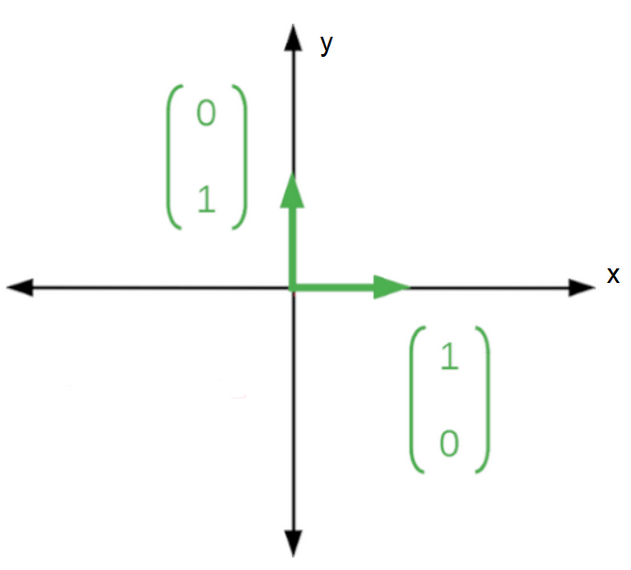
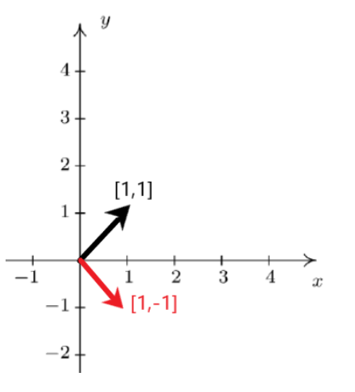

Superposition Vectors (High School Content)¶
Next, we’re going to look at how superposition states are represented. This is going to give you enough knowledge to fully explore the activities that follow!
This requires a bit of math, but if you know what a sphere is and what line is, you should do just fine. Don’t let the weird notation fool you. Physicists like to make things fancy by using Greek letters and wacky symbols, but in the end all we are doing is a little geometry.
So far we have learned that qubits can be in any combination of four states. A state can refer to anything: it can refer to spin (like we saw in the previous activity) or any other quantum property that we find useful. We’ll be looking at spin states in the next activity, so feel free to think about states that way, if you like. Let’s look at the first two of these states, and represent them using a new kind of notation. This will make it easier to deal with them. Don’t think too much about the form of the notation, just take it as a given for now.
\(\uparrow\;qubit\;state\;=|0\rangle\)
\(\downarrow\; qubit\;state \;= |1 \rangle\)
These states can be used to represent spin up and spin down. From here onwards, we will refer to qubits as \(|0\rangle\) or \(|1\rangle\) instead of \(\uparrow\) or \(\downarrow\) .
The symbols \(|\;\rangle\) used to describe the qubits are just a fashionable way of describing simple vectors as given below:
\(|0 \rangle\;=\;\begin{bmatrix} 1 \\ 0 \end{bmatrix}\)
\(|1 \rangle\;=\;\begin{bmatrix} 0 \\ 1 \end{bmatrix}\)
If you’re not too familiar with the concept of vectors, don’t worry! You can imagine a 2-D vector, like the one above, as a set of x and y coordinates. For example, \(\begin{bmatrix} 1 \\ 0 \end{bmatrix}\) will have x=1, y=0. If you draw a line to this point from the origin, that will be your ‘vector’! Vectors are just lines, with one end that is fixed somewhere and another end (the one with the little arrow) free to move about.

The quantum states, \(|0 \rangle\) and \(|1 \rangle\) are special vector states called basis vectors. What that means is that you can construct any quantum state by a combination (such as addition, subtraction, multiplication by a number) of the \(|0 \rangle\) and \(|1 \rangle\) states.
This means that the other two states we have seen, \(\leftarrow\) and \(\rightarrow\) can be written as superpositions of the \(\uparrow\) and \(\downarrow\) states! So these states will contain both \(|0 \rangle\) and \(|1 \rangle\) in equal amounts.
These states can be written as:
\(\leftarrow\; = |0 \rangle + |1 \rangle\)
\(\rightarrow\; = |0 \rangle - |1 \rangle\)
Any quantum state can be written by a combination of basis vectors, so any random state can be represented with variables.
\(state\; =\; a|0 \rangle + b|1 \rangle\)
This notation might be a little weird, but it’s worth the effort to understand it since most online resources will use this format! \(a\) and \(b\) are variables that show us how much of each basis state exists in the new state. Because the state contains amounts of \(|0 \rangle\) and \(|1 \rangle\), it is said to be in a superposition of \(|0 \rangle\) and \(|1 \rangle\) states. Superpositions are a quantum property. This means that when measured, we will get a classical value—either 0 or 1— with a certain probability.
What would you get if you made a superposition of \(\leftarrow\) and \(\rightarrow\)?¶
Since \(\leftarrow\) is \(|0 \rangle + |1 \rangle\) and \(\rightarrow\) is \(|0 \rangle - |1 \rangle\), their sum will be \(|0 \rangle\) or \(\uparrow\)
The state \(|0\rangle\) can be represented as \(|0\rangle\) or as \(\leftarrow\;+\;\rightarrow\) and end up looking the same! Similarly, \(|1\rangle\) can be written as \(\leftarrow\;-\;\rightarrow\).
Since \(\leftarrow\) and \(\rightarrow\) can be used to represent any quantum state, they too form a basis.
All this means is that we have a lot of freedom in how we want to represent our qubit!
Let’s represent these vectors on an x-y plane to see what they ‘look’ like:
\(\leftarrow\;=\;\begin{bmatrix} 1 \\ 0 \end{bmatrix}\;+\;\begin{bmatrix} 0 \\ 1 \end{bmatrix}\;=\;\begin{bmatrix} 1 \\ 1 \end{bmatrix}\)
We can use similar logic for \(\rightarrow\):
\(\rightarrow\;=\;\begin{bmatrix} 1 \\ 0 \end{bmatrix}\;-\;\begin{bmatrix} 0 \\ 1 \end{bmatrix}\;=\;\begin{bmatrix} 1 \\ -1 \end{bmatrix}\)
We can represent this on an x-y plane.

Now you can see how adding the red and black arrows together will give the \(\begin{bmatrix} 1 \\ 0 \end{bmatrix}\) state.
When we mean that a state is a superposition of two other states, we’re basically just doing vector addition!
Thinking this way will come in handy when you’re playing with the experiments in the next activity.